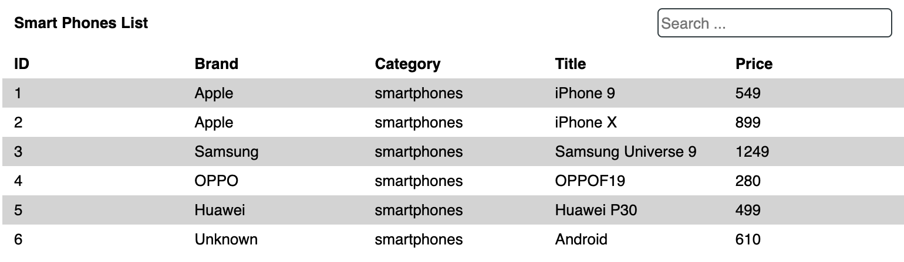

This JSON powered table in HTML is search and sortable. Nimble enough to plug
right into an array of projects. There's an onslaught of additional features
that can be added here, but I think this's a good foundation. With the current
setup we could add pagination and/or expandable rows. Just to name a few.
Let's begin with the markup, which is shockingly simple.
- Add the title and input field inside of a parent wrapper.
- Do the same for the headers.
- Create an empty section for the body content

The JavaScript is far more complex. If you're seeking a static table in
html, there's plenty of resources for that.
-
Get the search field followed by the caret—which is currently non
existent. We're gonna add it dynamically. That's the purpose of this
line here: caret != undefined ? caret.remove() : ''; sortColumn fn takes
says, "If the caret is not undefined, do something. Otherwise, do
nothing.
- body gets the body class. This is where we inject the HTML.
-
filterType retrieves the name of the clicked column to use it for how
it's filtered.
-
filtered is an array used to reorganize table rows, when filtered.
- data is the incoming JSON, and markup is the actual HTML.
- str is the input field value
-
The first block is a key-up listener on the search field. It rearranges
the data by looping over an array of objects, then repopulates the
table.
-
To repopulate the data, markup and the body innerHTML are set to empty.
We then populate the table, and set the innerHTML to the new order.
-
comparison fn is a fancy way of comparing the key values with one
another. Then reordering them.
-
sortColumn fn does a number of things. One such item is it destroys and
recreates the caret. We run the populateTable fn again.
There's a million ways to do this. This was my first attempt at the
challenge without a framework. Using one would no doubt be a time saver, but
I digress. Play around with the code
here. Hope you enjoyed this brief explanation of my table in HTML.
This JSON powered table in HTML is search and sortable. Nimble enough to plug
right into an array of projects. There's an onslaught of additional features
that can be added here, but I think this's a good foundation. With the current
setup we could add pagination and/or expandable rows. Just to name a few.